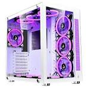
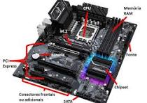
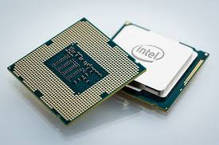
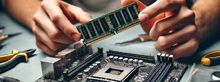
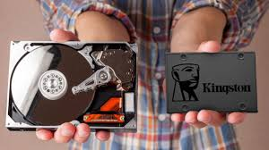
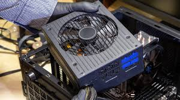
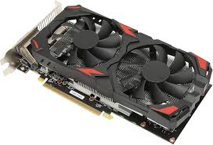

porque o planejamento e o primeiro, simples voce nao pode sair comprando os componentes do seu computador. A escolha dos componentes é feita de acordo com as necessidades do seu negócio e com as características do seu computador.
O tipo de PC que está montando também influenciará o tipo de gabinete, ventoinha e fonte de alimentação que você precisará usar. Se quiser um equipamento de alto desempenho, por exemplo, vai precisar de uma fonte de alimentação robusta para suportá-lo.Você também precisará de um gabinete com um fluxo de ar interno ideal e ventoinhas para expelir o ar quente que pode danificar o sistema.
É o componente principal onde todos os outros são conectados. Ela contém os slots para o processador (CPU), memória RAM, e outras placas de expansão, além de fornecer conexões para armazenamento e periféricos.
">A "cérebro" do computador, responsável pelo processamento das instruções e execução dos programas. A escolha da CPU vai influenciar diretamente a performance do sistema.
Serve para armazenar temporariamente os dados que o processador precisa acessar rapidamente. Quanto maior a RAM, mais dados podem ser manipulados simultaneamente, o que melhora a performance do sistema.
Aqui ficam armazenados o sistema operacional, programas e arquivos. Os SSDs (unidades de estado sólido) são muito mais rápidos que os HDs (discos rígidos), e são recomendados para melhorar o tempo de resposta do sistema.
Fornece energia para todos os componentes do computador. A potência da fonte precisa ser suficiente para suportar todos os componentes que você escolheu, como o processador, a placa de vídeo e os discos de armazenamento.
É o componente que renderiza as imagens que você vê na tela. A escolha da placa de vídeo vai influenciar diretamente a qualidade e velocidade de visualização dos seus programas.
